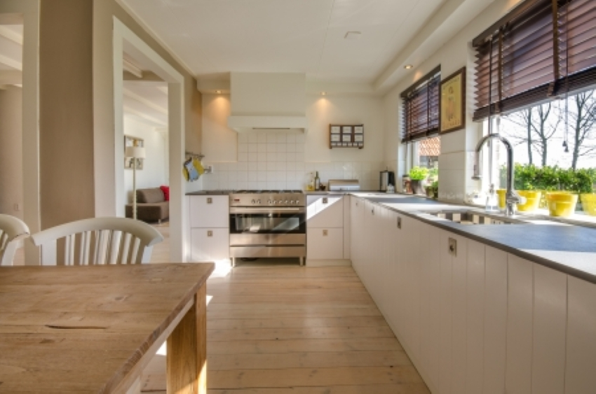

Bienvenue sur Cuisine MOMO
Cuisine MOMO est un projet du Cégep Montmorency pour découvrir la cuisine au quotidien : des recettes accessibles, des techniques de base expliquées simplement, et un coup d’oeil sur les produits de saison au Québec.
Bon appétit!
